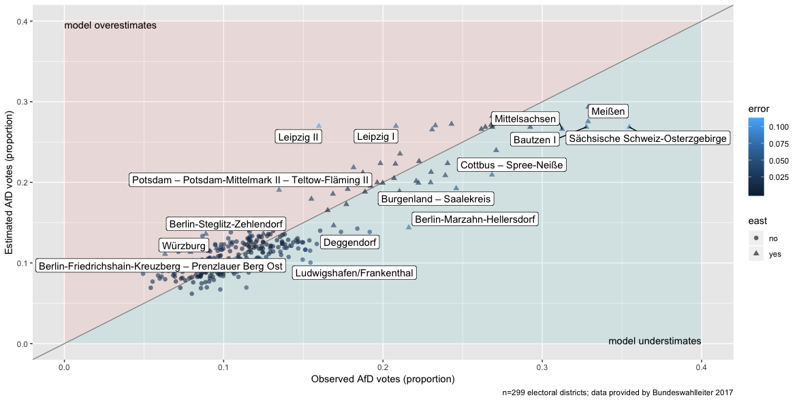

AfD votes, and socioenomic factors at the Bundestagswahl 2017
class: top, left # AfD votes

class: center, middle, inverse
Right-wing populism then and now
class: top, left # Causes of 20th century world wars
nationalism
authoritarianism
racism
territorial disputes
class conflicts
crisis of capitalism
.small[.footnote[Source: Kershaw, I. (2016). To hell and back: Europe 1914-1949. New York City, NW: Penguin.]]
???
Image credit:Wikipedia, RIA Novosti archive, image #44732 / Zelma / CC-BY-SA 3.0
class: top, left
shows anti-establishment attitude
the people is thought as a homogeneous body
elites are portrayed as corrupt, the people as morally pure
favors anti-pluralism
provides low complexity solutions to societal questions
narrative of “forgotton man Joe Plumber”
sees threat in cultural outsiders
.footnote[Source: Decker, F. (2003). Der neue Rechtspopulismus. Wiesbaden: VS Verlag für Sozialwissenschaften. Nicole Berbuir, Marcel Lewandowsky & Jasmin Siri (2015) The AfD and its Sympathisers: Finally a Right-Wing Populist Movement in Germany?, German Politics, 24:2, 154-178, DOI: 10.1080/09644008.2014.982546]
The AfD …
engages in close contacts to far-right
recruits (ex-)nazis
Indirect support of violence towards minorities:
“Wenn der Staat die Bürger nicht mehr schützen kann, gehen die Menschen auf die Straße und schützen sich selber.”
.small[— Tweet by Markus Frohnmaier (@Frohnmaier_AfD) on August, 26th 2018 in reaction to Chemnitz riots]
.footnote[Source: Fuchs, C., & Middelhoff, P. (2018, May 12). Neue Rechte - Bis in den letzten, rechten Winkel. Retrieved from https://www.zeit.de/politik/deutschland/2018-05/neue-rechte-verteilung-deutschlandkarte]
class: top, left # Popular theories on AfD success
Populist party support is fueled by …
weak economy (“rust belt hypothesis”)
high immigration (“flooding hypothesis”)
cultural patterns (“Saxonia hypothesis”)
.footnote[Source: Franz, Christian; Fratzscher, Marcel; Kritikos, Alexander S. (2018) : German right-wing party AfD finds more support in rural areas with aging populations, DIW Weekly Report, ISSN 2568-7697, Deutsches Institut für Wirtschaftsforschung (DIW), Berlin, Vol. 8, Iss. 7/8, pp. 69-79]
.center[
]class: middle, center, inverse
class: top, left # AfD votes


class: middle, center, inverse
class: top, left
Data were…
obtained from Bundeswahlleiter 2017
had no missings
were z-transformed
Details here
Stan via the R packages rstan and rethinking
Hamiltonian Markov Chain Monte Carlo (MCMC)
2000 iterations, 2 chains, 1/2 burn-in
Information criteria (WAIC) used for model comparison
üôÄ some fitting issues with count models
Details here
.footnote[Guideline: McElreath, R. (2016). Statistical rethinking. New York City, NY: Apple Academic Press Inc.]
\[\begin{aligned} \text{AfD}_i &\sim \mathcal{N}(\mu_i, \sigma)\\ \mu_i &= \beta 0_{[east]} + \beta 1 \cdot \text{foreign_z} + \beta2 \cdot \text{unemp_z}\\ \beta0_{[east]} &\sim \mathcal{N}(0, 1)\\ \beta1 &\sim \mathcal{N}(0, 1)\\ \beta2 &\sim \mathcal{N}(0, 1)\\ \sigma &\sim \mathcal{N}(0, 1)\\ \end{aligned}\]

class: middle, center, inverse
#> Error in readChar(con, 5L, useBytes = TRUE): cannot open the connection
#> Error in eval(expr, envir, enclos): object 'stan_normal_models' not found
#> Error in h(simpleError(msg, call)): error in evaluating the argument 'object' in selecting a method for function 'precis': object 'm' not found
#> Error in kable(.): object 'precis_m' not found#> Error in readChar(con, 5L, useBytes = TRUE): cannot open the connection
#> Error in rownames_to_column(.): object 'stan_model_comparison' not found
#> Error in full_join(., model_spec): object 'stan_model_comparison_output' not found#> Error in kable(.): object 'stan_model_comparison_output2' not found#> Error in eval(expr, envir, enclos): object 'stan_normal_models' not found
#> Error in h(simpleError(msg, call)): error in evaluating the argument 'object' in selecting a method for function 'precis': object 'm_fav' not found
#> Error in crosstalk::is.SharedData(data): object 'precis_m_fav' not found


class: middle, center, inverse
class: top, left
Region related patterns appear to play an important role
The present model is simplistic
Future elections will provide interesting opportunities for model improvements
.footnote[Nicole Berbuir, Marcel Lewandowsky & Jasmin Siri (2015) The AfD and its Sympathisers: Finally a Right-Wing Populist Movement in Germany?, German Politics, 24:2, 154-178, DOI: 10.1080/09644008.2014.982546]
Observational research is a very limited guide for causal interpretations
Fitting issues with count models warrant more investigation
Overfitting may be present (and underfitting)

class: middle, center, inverse
Sebastian Sauer #### sebastiansauer #### https://data-se.netlify.com/ #### ssauer@posteo.de #### Get slides here: http://data-se.netlify.com/slides/afd_dgps2018/afd_dgps2018.html#1